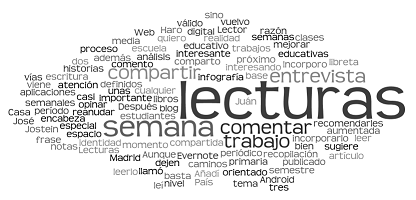

 Generalidades: • Nombre de la tematica: Diagramas de interacción. • Descripcion de la tematica General: Conocer la importancia de los diagramas de interacción en el comportamiento de un sistema. • Subtemas Relevantes Asociados a la Temática General: Describir los diagramas de secuencia y colaboración. • Diseño de sistemas TI pertenece al núcleo problémico modelado de datos y procesos en la organización y a su vez al núcleo integrador de problemas diseñar y construir soluciones de problemas de información a través de proyectos de desarrollo de software El curso de Diseños de Sistemas TI pertenece a la Escuela de Ciencias básicas de las Tecnologías e ingenierías y al programa Tecnología en Desarrollo de Software, este es un curso teórico-práctico de tres créditos académicos, de formación disciplinar especifico. Contenidos: • Introducción al diseño orientado a objetos: Ciclo de vida de un sistema y El modelo orientado a objetos. • Métodos del diseño orientado a objetos: Métodos del diseño. • Métodos del diseño orientado a objetos usando UML: Diagramas de formas de utilización, Diagramas estáticos, Diagramas dinámicos y Diagramas de implementación. Ver hoja de ruta Estrategia de aprendizaje: Nuestra estrategia es el aprendizaje basado en proyectos donde la actividad académica se desarrolla en torno de la discusión de un problema en el contexto y el aprendizaje surge de las posibilidades que tiene el estudiante de trabajar en equipo y de autorregular su proceso, esta estrategia consta de cuatro momentos que son: • Introducción al diseño orientado a objetos: Ciclo de vida de un sistema y El modelo orientado a objetos. • Métodos del diseño orientado a objetos: Métodos del diseño. • Métodos del diseño orientado a objetos usando UML: Diagramas de formas de utilización, Diagramas estáticos, Diagramas dinámicos y Diagramas de implementación.